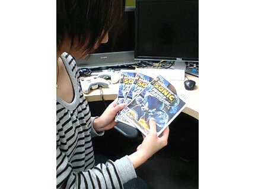

『はじめまして！』
2008年12月18日
はじめまして！
『ソニック ワールドアドベンチャー』(略して『SWA』)チームの
プランナー2年目、マツバラと申します！
同じく、プランナー2年目のヨシノです。
よろしくお願いいたします。
この場をお借りして
開発者の雰囲気や、開発中の裏話などを楽しくお伝えするため
ブログを始めさせていただきます♪
ここでは、
「ソニック」開発に携わる新人プランナー2人の会話を
ゆる～くお届けします。
お茶でも飲みながら楽しんでくださいませ。
たくさん更新するので、
ちょくちょく見にきてくださいね！
さて……マツバラ。
今日は遂に……？
Wii版の発売日です！！
わーわー、ぱちぱちぱちー。
皆さまはすでに『SWA』を遊んで頂けてるでしょうか？
すっごく気になります！
ヨシノはもう買った？
……(ごそごそ)
ほーら、ここにこんなに！

3本も買ったの！？
いや、Wii版プロデューサーの森本さんにもらいました。
「このサイトを見てくれてる方に
プレゼントとして差し上げてくれ」って。
なんだ、びっくりした～。
さすが森本さん、太っ腹だね！
じゃあ早速……
高値で売りに……
違う！！
ここをご覧の方にプレゼントします！！
ちぇっ。
というわけで、Wii版『SWA』を3名の方にプレゼントいたします！
応募者さまのペンネームをご記入の上
こちらのメールアドレスまで……
つまらん。
えっ！？
ただ応募するだけじゃつまらないので……
せっかくだから同時に
「マツバラ・ヨシノがこのブログ上ですること」を募集します☆
採用された方3名には『SWA』のWii版をプレゼント。
えっ？ えっ！？
そんな、まだ第一回目なのに！！
いやいや、だからいいんじゃない。
まだ連載第一回目で、皆さまにしてみれば「お前ら誰？」状態の私たちが
皆さまにぐーんと接近するチャンス！
そ……そう言われればそうかも？
もちろん、採用された方の企画は実行します。
挑戦してほしいこと、教えてほしい『SWA』裏話、その他なんでもOKです☆
皆さんのご要望をお待ちしています！
……というわけで、早速私も応募してきます。
「マツバラがヨシノに築地のウニをオゴり続ける」……
却下―――！！
※ 現在、下記募集期間は終了しております。
[Wii版『SWA』ソフト(日本語) 3名様にプレゼントいたします！]
応募要項
タイトル「Wii版『SWA』プレゼント係」としたメールに(1) 応募者さまのペンネーム
(2) 年齢
(3) 「ブログ上でしてほしいこと」……をご記入の上
2008年12月28日までに
こちらのメールアドレス(swa_hamidashi@sega.co.jp)までお送り下さい。
採用された方3名様に「Wii版『SWA』」を差し上げます。
(尚、採用の発表は、当ブログ上で1月ごろ行います。
採用の方には別途プレゼント送付先をお伺いするメールをお送りいたします。)注意事項
お送りいただいたメールの文面は
予告なく当ブログにて公開させて頂くことがございますので、ご了承下さい。
また、発送の関係上、応募は日本国内在住の方のみに限らせて頂きます。
でも、突然で驚いたけど、
どんなリクエストが届くかドキドキだね！
いや、更新のネタが集まればいいな、と……
それが狙いか！！
日時: 2008年12月18日 18:00 | パーマリンク


 ソニックを愛する、元気な『SWA』2年目プランナー。
ソニックを愛する、元気な『SWA』2年目プランナー。 マイペースな『SWA』2年目プランナー。
マイペースな『SWA』2年目プランナー。
 ご意見・ご要望はこちら
ご意見・ご要望はこちら RSS
RSS